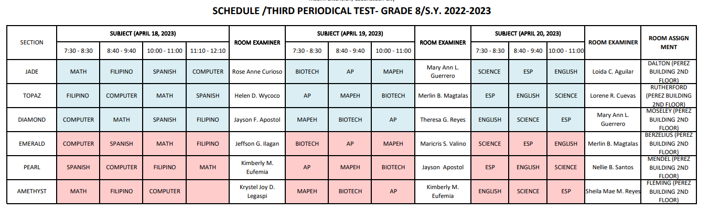

Produced by:
JoshMayBalloon (Joshua Calara) and
Written by: Vicente Amugauan
and others |
April 17, 2023 | Anouncements
Current Time is:
not working :(

EXAMS ARE COMING!!! GOOD LUCK! REVUEW WEL!!!
Anouncements:
LANGUAGE WEEK (School Event) (last week of April)
- Jazz Chants: English Memorization (April 26 - 28?)
- No Te Rindas Poem: Spanish Memorization (April 25)
Quiz / Activity:
Biotech
- Quiz on ???
AP
-"Take home" Quiz said by Ma'am until Tuesday
Enhancement English
- Reading Recovery, Inferential Reading
- Linear and Non-linear text
- Activities in GCR
English
- About Song composition
- Due this week?
Performance Tasks:
ICT
- Magpacheck na kayo kay sir sa lahat
- More on GCR.
- Due on Thursday
- Dapat LAHAT NG ACTIVITIES, dapat nakaprint din at Magdala ng folder / portfolio
- Portfolio:
1. Introduction
2. Table of Contents
3. Summary Sheet
4. Compilation of WW, PT's and Activities
5. Best Output
6. Reflection / Conclusion
MAPEH
-Chess piece, This Week due!
Reminders:
Print Bio Presentation (the one during biotech observation)
CHECK YOUR GCR TO DO
MEMORIZE PERIODIC TABLE FOR SCIENCE
For this quarter in Science, we will need to have PPE for the upcoming activities. These equipments are Lab gown, Gloves (rubber), and Eyeglass. BRING IT EVERY
BIOTECH AND SCIENCE ACTIVITY/PT!!
Every week, on the last meeting in MAPEH, we will have a quiz about the topics we had that week.
Laging mag SUOT ng I.D ipapatawag sa principals office pag walang I.D.
Accomplish your missing activities!
P.S. that's all the things I remember...
Kung may kulang, mali, o idadagdag pa kayo sa announcements, magmessage kayo sa gc at i-add ko kasama ng opisyal
na announcement...
 Produced by:
JoshMayBalloon (Joshua Calara) and
Produced by:
JoshMayBalloon (Joshua Calara) and
 Written by: Vicente Amugauan
and others |
April 17, 2023 | Anouncements
Written by: Vicente Amugauan
and others |
April 17, 2023 | Anouncements